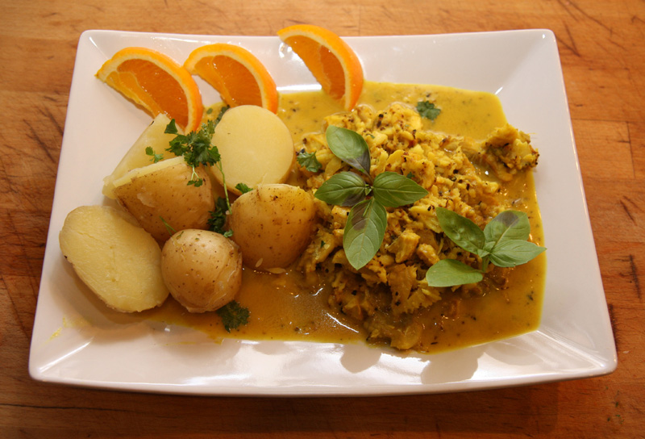

Coconut Curry Fish

A wonderfully flavorful but quick dish! Serve over brown rice, millet, or quinoa.
Ingredients
- 2 cups water
- 1 cup uncooked brown rice
- 1 tablespoon vegetable oil
- 1 large onion, chopped
- 3 cloves garlic, crushed
- 1 pound cod fillets, cut into chunks
- 1 ½ tablespoons curry powder
- 2 teaspoons chili powder
- 1 teaspoon ground turmeric
- 1 teaspoon ground cumin
- salt and pepper to taste
- 1 (14 ounce) can coconut milk
- 1 (16 ounce) package frozen stir-fry vegetables
- 1 tablespoon cornstarch
Directions
- Bring the water and rice to a boil in a pot. Cover, reduce heat to low, and simmer 45 minutes.
- Heat the oil in a skillet over medium-high heat. Stir in the onion and garlic, and cook 1 minute. Mix in cod, and season with curry powder, chili powder, turmeric, cumin, salt, and pepper. Pour in the coconut milk, and mix in frozen vegetables. Cover, and cook 10 minutes, or until vegetables are tender and cod is easily flaked with a fork.
- Drain 1/2 cup liquid from the skillet into a bowl, and mix with cornstarch. Stir back into skillet to thicken sauce. Serve over the cooked rice.
Return to top
Return to main page